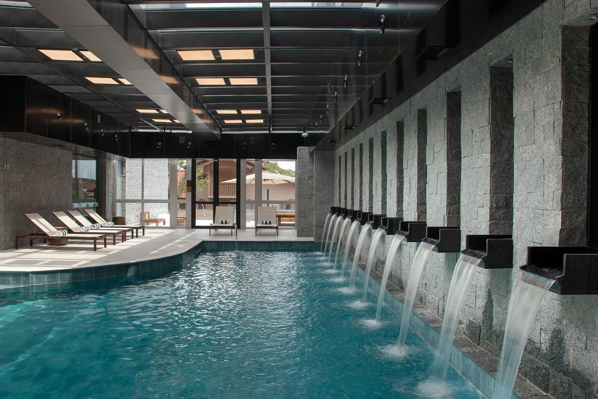
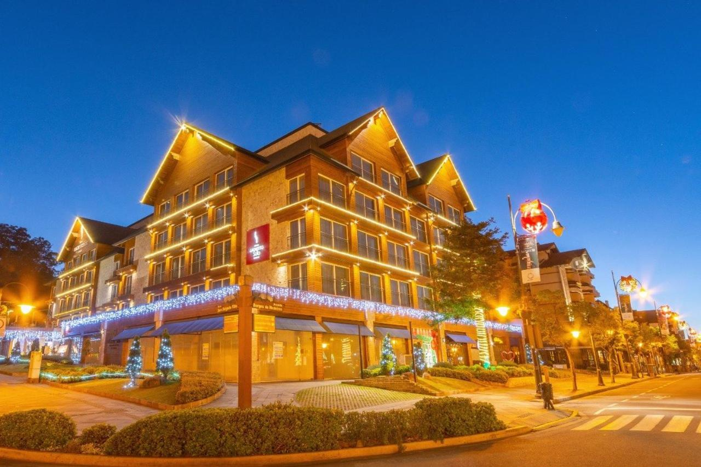
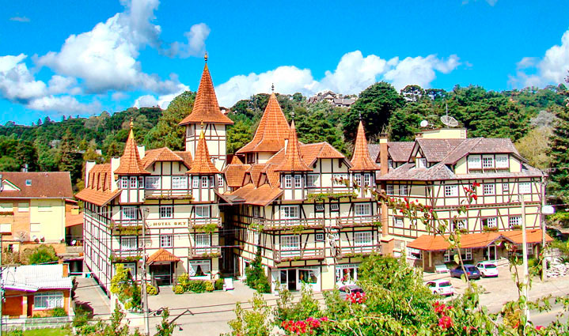

Gramado Tour
Criado para você, visitante, de Gramado
Dois dos nossos melhores hotéis da região
Exclusive Gramado by Gramado Parks
O Exclusive Gramado by Gramado Parks oferece restaurante, academia, bar e lounge compartilhado
em Gramado. O hotel dispõe de jardim e fica perto de várias atrações famosas, a 1,9 km do Palácio dos
Festivais, a 2 km da Igreja de São Pedro e a 1,3 km do Museu de Cera. A acomodação conta com recepção 24
horas, serviço de quarto e depósito para bagagem.

Tabela de Preços
| Quantidade |
Diaria |
Final de Semana |
7 dias |
| 1 pessoa |
R$ 180,00 |
R$ 250,00 |
R$ 600,00 |
| Casal |
R$ 350,00 |
R$ 500,00 |
R$ 1.050,00 |
| Double Solteiro |
R$ 250,00 |
R$ 450,00 |
R$ 800,00 |
Hotel Laghetto Stilo Borges
Situado no centro de Gramado, o Hotel Laghetto Stilo Borges fica a 3 minutos a pé do Palácio
dos Festivais, a 300 metros da Igreja de São Pedro e a 800 metros da Estação Rodoviária de Gramado, e
dispõe de academia, sauna, salão de jogos e um jardim. A acomodação apresenta vista da cidade. O Wi-Fi
gratuito está disponível.

Tabela de Preços
| Quantidade |
Diaria |
Final de Semana |
7 dias |
| 1 pessoa |
R$ 170,00 |
R$ 250,00 |
R$ 550,00 |
| Casal |
R$ 300,00 |
R$ 500,00 |
R$ 1.000,00 |
| Double Solteiro |
R$ 250,00 |
R$ 450,00 |
R$ 750,00 |
Hotel Sky
Um dos melhores hotéis de Gramado, e o mais bonito hotel da Serra Gaúcha!
O Hotel Sky está localizado a apenas 800 metros do centro de Gramado.
Em estilo Enxaimel, é um dos cartões postais da cidade, tendo como seu principal diferencial, o atendimento
familiar.

Tabela de Preços
| Quantidade |
Diaria |
Final de Semana |
7 dias |
| 1 pessoa |
R$ 190,00 |
R$ 240,00 |
R$ 520,00 |
| Casal |
R$ 350,00 |
R$ 550,00 |
R$ 1.000,00 |
| Double Solteiro |
R$ 360,00 |
R$ 560,00 |
R$ 1.100,00 |